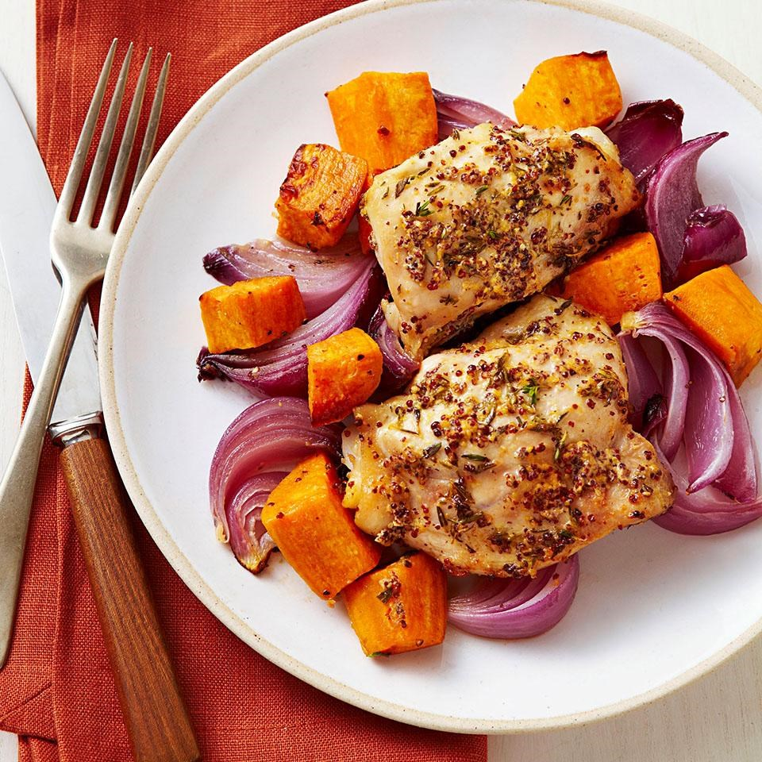

Roast Chicken & Sweet Potatoes

- 2 tablespoons whole-grain or Dijon mustard
- 2 tablespoons chopped fresh thyme or 2 teaspoons dried
- 2 tablespoons extra-virgin olive oil, divided
- 1/2 teaspoon salt, divided
- 1/2 teaspoon freshly ground pepper, divided
- 1 1/2-2 pounds bone-in chicken thighs, skin removed
- 2 medium sweet potatoes, peeled and cut into 1-inch pieces
- 1 large red onion, cut into 1-inch wedges